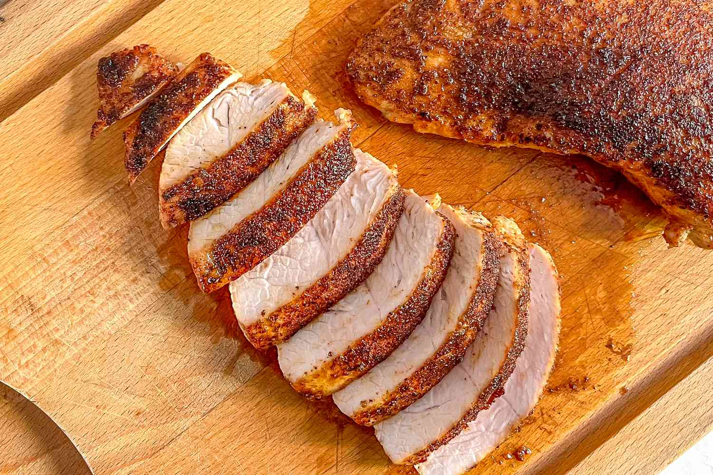

The BEST Mac n' Cheese Recipe
Info
-
1 hour
-
12 servings
-
642 kcal
Nutrition Facts (per serving)
- Calories: 642 kcal
- Protein: 26g
- Carbohydrates: 40g
- Fat: 41g
- Saturated Fat: 24g
- Cholesterol: 125mg
- Potassium: 256mg
- Fiber: 2g
- Sugar: 6g
Ingredients
Close
- 16 oz elbow macaroni
- 1 tbsp extra virgin olive oil
- 6 tbsp unsalted butter
- 1/3 cup all-purpose flour
- 3 cups whole milk
- 1 cup heavy whipping cream
- 4 cups sharp cheddar cheese, shredded
- 2 cups gruyere cheese, shredded
- Salt and pepper to taste
- 1/4 tsp smoked paprika
- 1/2 cup Parmesan cheese, shredded
- 4 tbsp melted butter
- 1/2 cups panko crumbs
Instructions
- Preheat oven to 350F. Lightly grease a large 3 qt or 4 qt baking dish and set aside.Combine shredded cheeses in a large bowl and set aside.
- Cook the pasta one minute shy of al dente according to the package instructions. Remove from heat, drain, and place in a large bowl.
- Drizzle pasta with olive oil and stir to coat pasta. Set aside to cool while preparing cheese sauce.
- Melt butter in a deep saucepan, dutch oven, or stock pot.
- Whisk in flour over medium heat and continue whisking for about 1 minute until bubbly and golden.
- Gradually whisk in the milk and heavy cream until nice and smooth. Continue whisking until you see bubbles on the surface and then continue cooking and whisking for another 2 minutes. Whisk in salt and pepper.
- Add two cups of shredded cheese and whisk until smooth. Add another two cups of shredded cheese and continue whisking until creamy and smooth. Sauce should be nice and thick.
- Stir in the cooled pasta until combined and pasta is fully coated with the cheese sauce.
- Pour half of the mac and cheese into the prepared baking dish. Top with remaining 2 cups of shredded cheese and then the remaining mac and cheese.
- In a small bowl, combine panko crumbs, Parmesan cheese, melted butter and paprika. Sprinkle over the top and bake until bubbly and golden brown, about 30 minutes. Serve immediately.
Other Recipes
Close
-
Tender Turkey!
Revolutionize this thanksgiving by making this melt-in-your-mouth flavorful turkey!